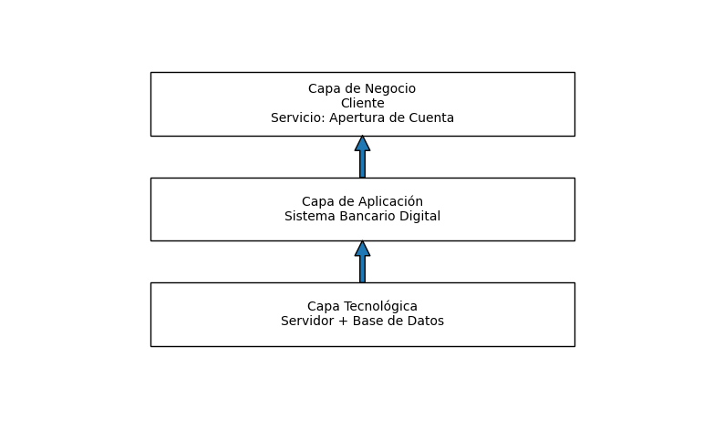
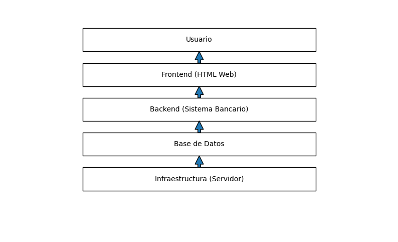

Banco Nova implementa una arquitectura empresarial para digitalizar la apertura de cuentas, alineando negocio, aplicaciones y tecnología.
Reducción TAT
Conversión
Satisfacción

Representa la relación entre negocio, aplicaciones y tecnología.

Flujo completo desde usuario hasta infraestructura.
Inicio → Capturar datos → Validar documento → Decisión → Validar biometría → Aprobación → Fin
Objetivo → Valor → Capacidad → Proceso → Sistema → Infraestructura